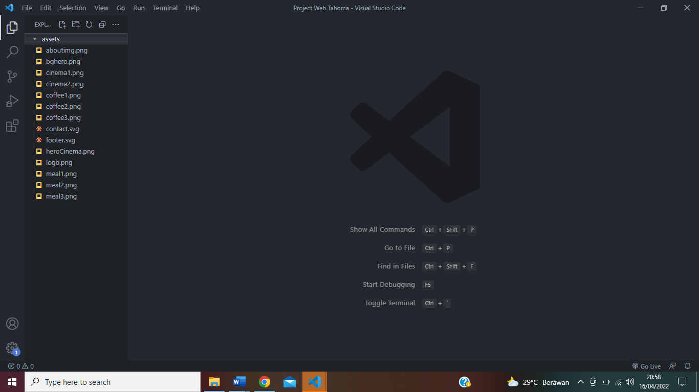

Pelaksanaan Praktek Kerja Industri
- Ringkasan Tugas yang Dilaksanakan
a. Bulan Desember
| No | Kegiatan |
|---|---|
| 1 | Pengenalan terhadap VR (Virtual Reality) |
| 2 | Melayani customer bermain VR (Virtual Reality) |
b. Bulan Januari
| No | Kegiatan |
|---|---|
| 1 | Pelepasan dan Pengarahan |
| 2 | Instalasi game pada VR (Virtual Reality) |
| 3 | Melayani customer bermain VR (Virtual Reality) |
| 4 | Membuat design UI/UX (User Interface/User Experience) web Tahoma |
| 5 | Kegiatan persiapan pembukaan kembali Tahoma |
c. Bulan Februari
| No | Kegiatan |
|---|---|
| 1 | Melayani customer bermain VR (Virtual Reality) |
| 2 | Membuat design UI (User Interface) Menu Tahoma |
| 3 | Menambah gambar menu ke design UI (User Interface) Menu Tahoma |
| 4 | Mengupload gambar menu ke google drive admin |
| 5 | Mengisi data menu ke google spreadsheet admin |
d. Bulan Maret
| No | Kegiatan |
|---|---|
| 1 | Merepost story Instagram Tahoma |
| 2 | Melayani customer bermain VR (Virtual Reality) |
e. Bulan April
| No | Kegiatan |
|---|---|
| 1 | Melayani customer bermain VR (Virtual Reality) |
- Deskripsi Tugas yang Dilaksanakan
Berikut ini deskripsi tugas dari beberapa uraian tugas yang dikerjakan di PT. Digital Lontar Nusantara:
Project Website Tahoma
1. Buat folder Project Web Tahoma kemudian buka folder tersebut pada aplikasi Visual Studio Code
2. Kemudian buat folder assets dengan mengeklik icon yang berada pada kotak merah setelah itu masukkan aset-aset (logo perusahaan, background image, dll) yang telah disiapkan
3. Buat file index.html dengan mengeklik icon yang berada pada kotak merah kemudian tulis sintak kode dasar HTML seperti berikut
4. Kemudian tulis sintak kode berikut untuk membuat navbar

5. Setelah itu tulis sintak kode berikut untuk membuat section home

6. Lalu tulis sintak kode berikut untuk membuat section about
7. Kemudian tulis kode sintak berikut untuk membuat section menu
8. Setelah itu tulis sintak kode berikut untuk membuat section VR (Virtual Reality)
9. Lalu tulis sintak kode berikut untuk membuat section miniCinema
10. Kemudian tulis sintak kode berikut untuk membuat section contact
11. Setelah itu tulis sintak kode berikut untuk membuat footer
12. Lalu buatlah file style.css dengan cara yang sama seperti membuat file index.html, kemudian hubungkan file style.css pada file index.html dengan menulis kode sintak seperti pada kotak merah berikut
13. Buka file style.css kemudian tulis sintak kode berikut untuk membuat pengaturan dasar style CSS
14. Setelah itu tulis sintak kode berikut untuk membuat style pada bagian background website dan navbar
15. Lalu tulis sintak kode berikut untuk memberi style pada section home
16. Kemudian tulis sintak kode berikut untuk memberi style pada section about
17. Setelah itu tulis sintak kode berikut untuk memberi style pada section menu
18. Lalu tulis sintak kode berikut untuk memberi style pada section VR (Virtual Reality)
19. Kemudian tulis sintak kode berikut untuk memberi style pada section miniCinema

20. Setelah itu tulis sintak kode berikut untuk memberi style pada section contact
21. Lalu tulis sintak kode berikut untuk memberi style pada footer
22. Kemudian tulis sintak kode seperti pada kotak merah berikut untuk menghubungkan file index.html dengan library swiper js
23. Lalu buatlah file script.js dengan cara yang sama seperti membuat file index.html, kemudian hubungkan file script.js pada file index.html dengan menulis kode sintak seperti pada kotak merah berikut
24. Buka file script.js setelah itu tulis sintak kode berikut untuk memberi interaksi pada section VR